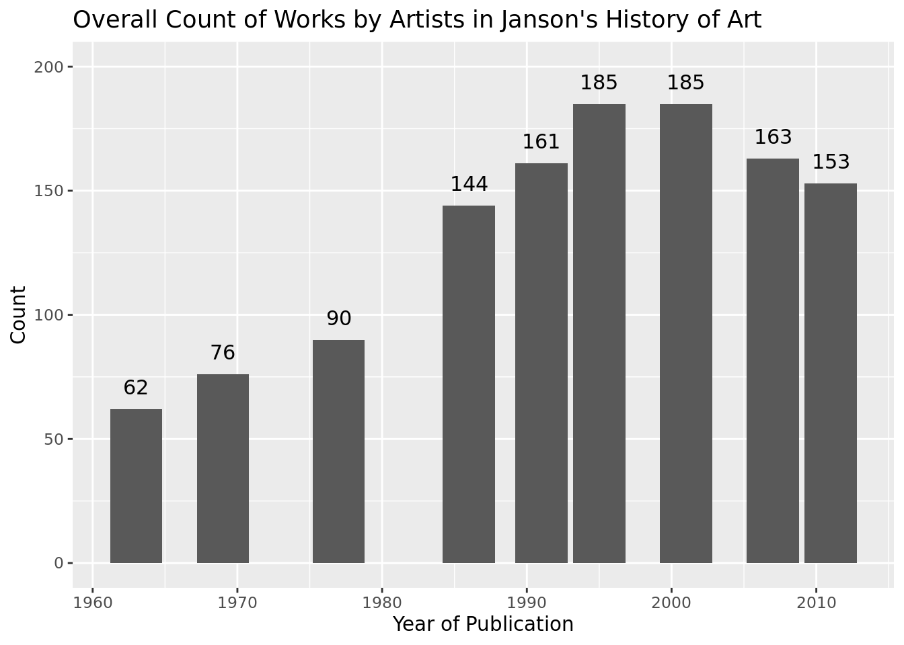
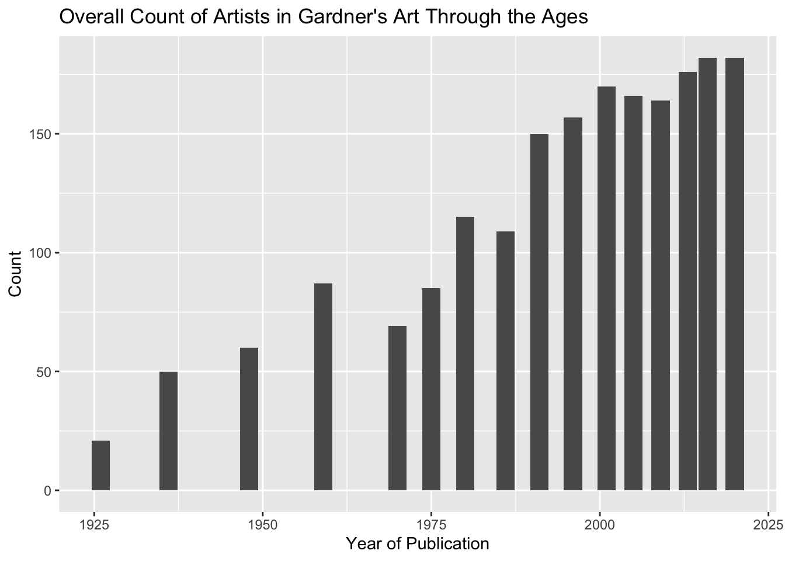
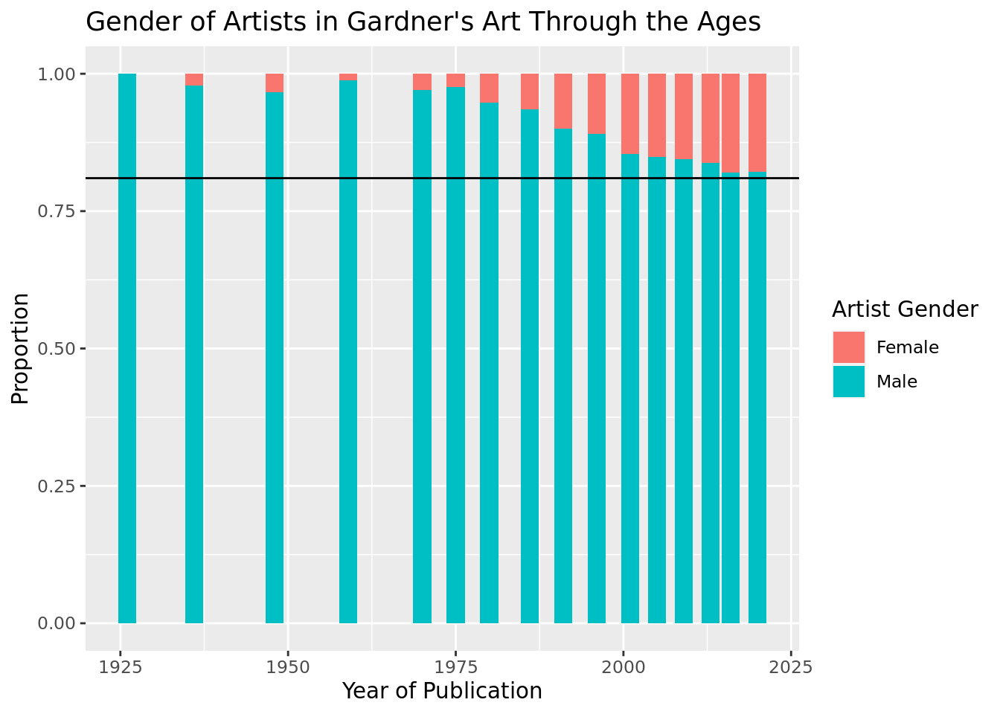
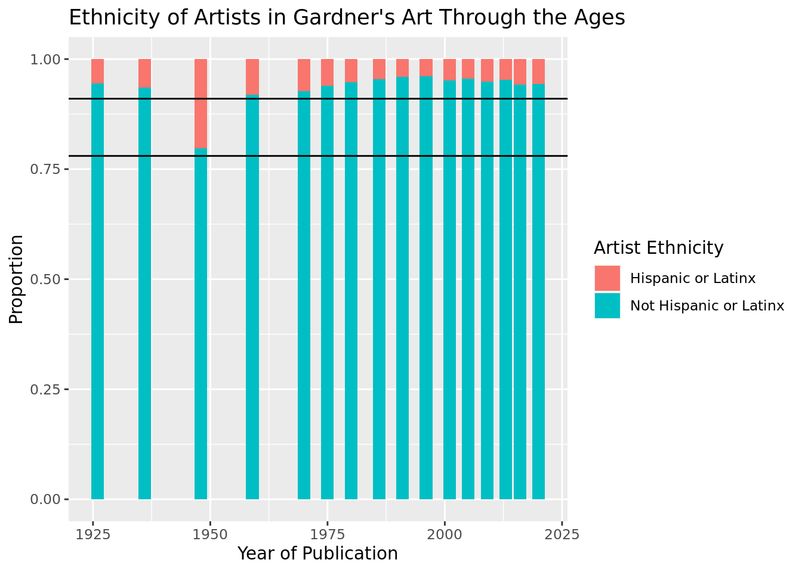
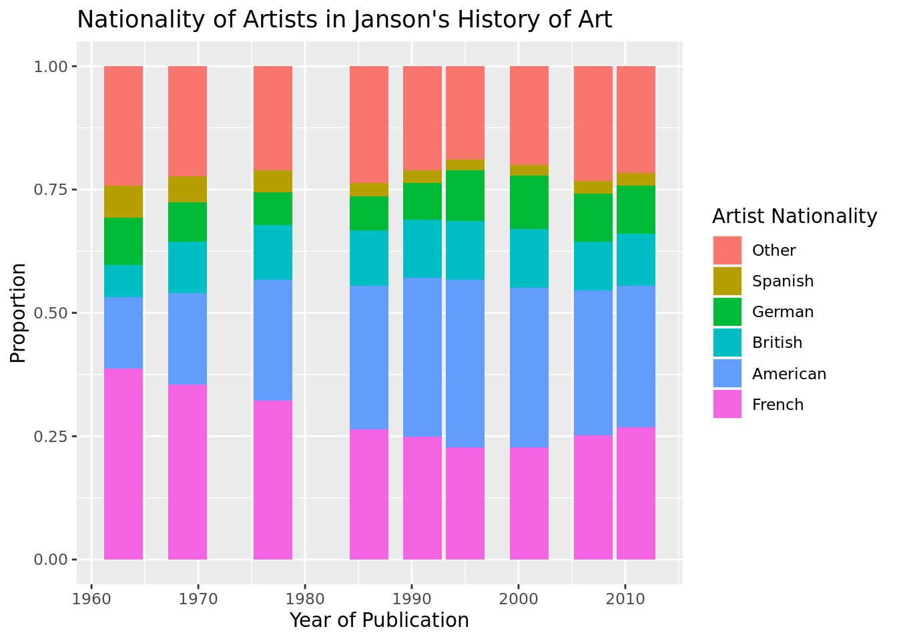
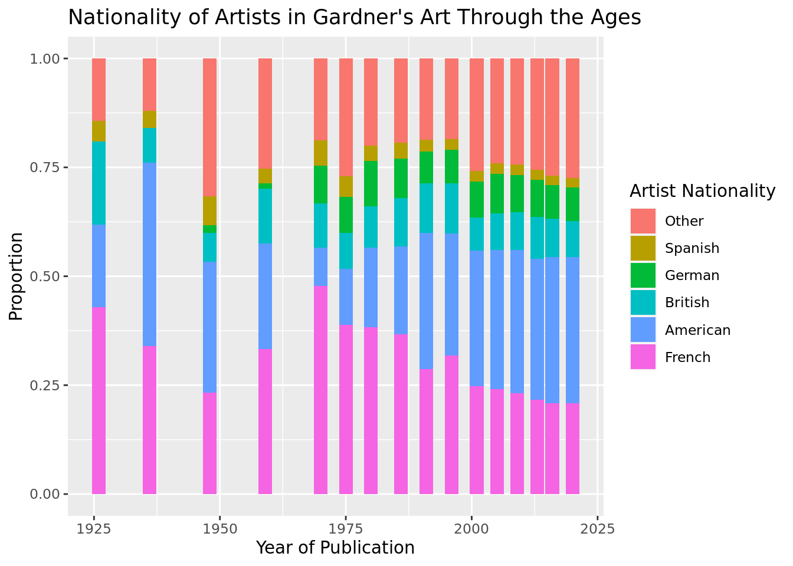
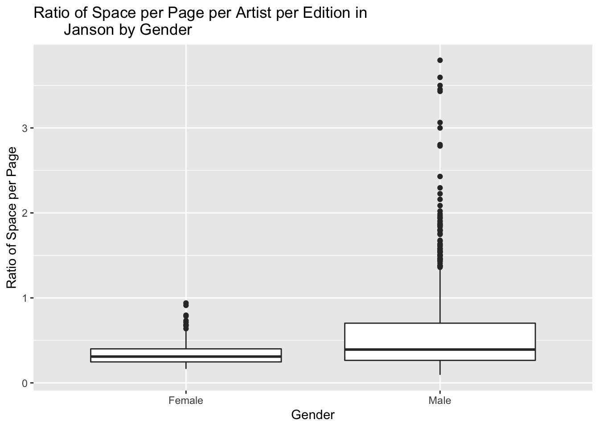
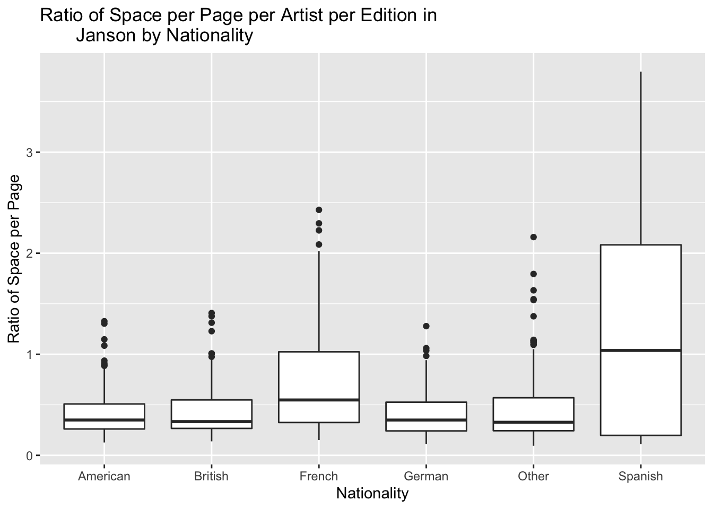
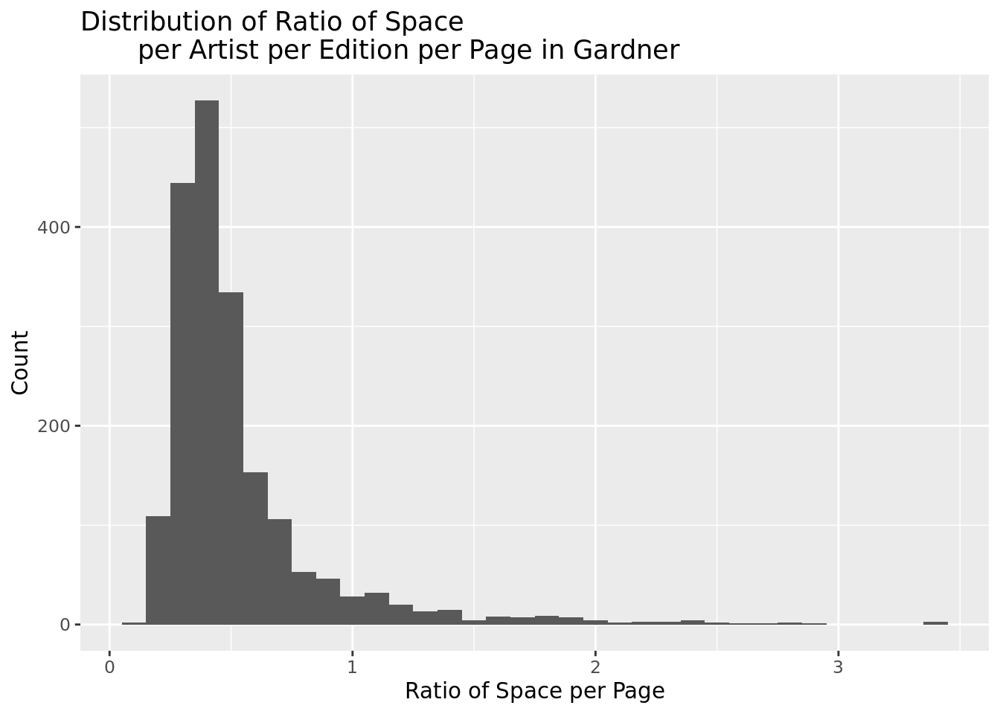
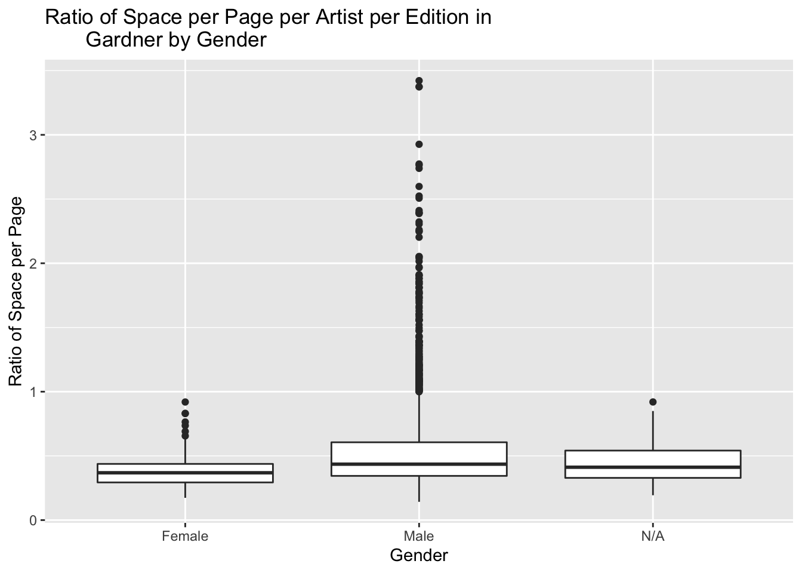

1 Quantifying Art Historical Narratives, Chapter 1
1.1 Abstract
My project surveys the development of Janson’s History of Art across its eight editions as well as Gardner’s Art Through the Ages through its sixteen editions, looking particularly at the change in artist demographic through time. Additionally, this paper investigates which external variables such as artist gender, ethnicity, race, nationality, number of exhibitions at the Museum of Modern Art and The Whitney, and number of publications on WorldCat, if any, help predict the magnitude of an artist’s inclusion in art historical survey texts. I conduct a data analysis to assess the demographic representation of artists through editions of Janson’s History of Art and Gardner’s Art Through the Ages, a proxy for the art historical survey. I compare artist demographics through editions of Janson and Gardner. My findings indicate that coverage of minority artists (defined as nonwhite and/or Hispanic or Latinx and/or female) increases across editions of Janson’s History of Art and Gardner’s Art Through the Ages, but remains negligible compared to white male non Hispanic or Latinx artists. Moreover, in Janson’s History of Art through all editions, the percentage of artists who are white is 98.04%, the percentage of artists that are male is 92.47%, and the percentage of artists that are not Hispanic or Latinx is 92.04% (cite). In Gardner’s Art Through the Ages, through all editions, the percentage of artists who are white is 92.76%, the percentage of artists that are male is 90.47%, and the percentage of artists that are not Hispanic or Latinx is 90.94% (see appendix). Both texts display a narrative of the history of art as being predominantly white, male, non Hispanic or Latinx. Regarding nationality, in Janson, 81.52% of the artists are American, British, French, German and Spanish, which is very similar to Gardner’s 79.30% of those five same nationalities (see appendix). HERE I WILL ADD FINDINGS FROM REGRESSION AS WELL AS CONCISE CONCLUSIONS ONCE I FINISH THE STATISTICS SIDE OF MY RESEARCH.
Data Preparation:
Warning: One or more parsing issues, see `problems()` for detailsJoining, by = c("artist_name", "year", "book")1.2 Introduction and Context: Why Janson’s History of Art and Gardner’s Art Through the Ages?
At the beginning of last year, Yale University announced its decision to eliminate its art history survey course over complaints that it prioritizes a white, western canon over other narratives.1 These art historical surveys have cemented themselves at the core of art history programs for decades, but now are being rejected as the most important story to tell when educating future art historians. I chose to look at Janson’s History of Art, first published in 1962 by H. W. “Peter” Janson with his wife, Dora Jane Janson (refer to Table 1), and Gardner’s Art Through the Ages first published by Helen Gardner in 1926 (refer to Table 2) as my two exemplary art historical narratives.
1.3 Janson’s History of Art:
Such a text is claimed to be the most influential art history survey through time by myriad art historians such as Jeffery Wiedman, Zoë Ingalls, John Russell, Alexandra Peers, Elizabeth Sears and Charlotte Schoell-Glass to name a few. Alexandra Peers in her publication for ARTnews.com in February of 2006, claims that “it was Janson who, more than any other art historian, pioneers the ‘in and out’ celebrity model of art history. There were artists who matter, he argued, and those who didn’t.”2 Janson’s formation of his history of art is not only arguably the most dominant art history survey over time, but also he holds a reputation of being a gatekeeper of art history. He states at the end of his introduction in the first and second editions that after having read his text, one “shall have joined the active minority that participates directly in shaping the course of art in our time.”3 He recognizes his role as an individual who shapes the narrative of the history of art, while convincing the reader that after having read his text, one has the agency to be a gatekeeper alongside him . Such agency is only granted once one understands his digestion of the most important works and artists through time .
It would be most comprehensive if we were to have access to the total number of sales per edition of Janson’s History of Art, to use as tangible data to show the relevance and importance of the text through time. Both publishers, Harry N. Abrams and Prentice-Hall (now Pearson Prentice-Hall) have declined sharing sales information in the aggregate. By leafing through various scholarly publications, there is imperfect data of sale information worth noting when discussing the dominance of Janson’s History of Art through time. The text was at its height of sales between when it was initially released in 1962 through H. W. “Peter” Janson’s death in 1982 (refer to Table 1 for complete information of each edition). Art historian, Patricia Hills cites in her publication in Artforum, “in 1973 the Janson text had 46% of the market, while Gardner’s 5th edition had 24%, followed by Gombrich’s, 8.5%, Cleaver with 3% and miscellaneous ‘other’ with 18.5%.”4 At the time such a report had been made, the first edition (1962), the first edition revised and enlarged (1969) had been released. Additionally, it was written by John Russell of the New York Times in October of 1982 that “well over two million copies have been sold.”5 Russell does not specify whether these sales numbers are solely the first edition of Janson’s History of Art, or the first edition as well as the first edition revised and enlarged and the second edition (1977) . He also added that the text had been “translated in 14 languages and is widely regarded as both an essential teaching instrument and a book that can be read and looked at with continuous enjoyment.”6 Here, Russell perpetuates the significance of Janson’s survey, as well as providing information about the breadth of Janson’s text, reaching more than solely English-reading audience s.
Conversely, Zoë Ingalls in a publication in August of 1995 discussing Janson’s relevance through time, cites that “the first edition sold more than a million copies.”7 Though there are informational discrepancies, it is clear that Janson’s History of Art was prolific as a survey text of art for over 20 years. The narrative remained significant from the third (1986) through the fifth edition (1995), which were all revised by Anthony “Tony” F. Janson, son of Peter and Dora Jane. Ingalls states that “the fourth edition, published in 1991, sold 21,000 copies the first year and an average of 11,000 copies a year in the past four years. The new fifth edition, has sold more than 13,000 copies since its March release.”8 She continues, “Although its sales have been eclipsed over the last 10 years by another perennial favorite, R.H. Gardner’s Art Through the Ages, Janson is still the standard in many people’s minds.”9 Notably, she does not mention any total sales information about Gardner’s survey text, just that over the past decade (1985-1995), its sales trumped that of Janson’ s.
After the sixth edition (2001) and the sixth edition revised (2004) the last with authorship by Tony Janson, Harry N. Abrams and Prentice Hall were unsatisfied by the total sales, as well as the overall structure and content of the text as they were criticized for having lost touch with young readers.10 At the same moment, Harry N. Abrams sold all rights to the newly formed Pearson Prentice Hall, who recruited new authorship of six various art historians across the United States: Penelope J. E. Davies, Walter B. Denny, Frima Fox Hofrichter, Joseph Jacobs, Ann M. Roberts, and David L. Simon (refer to Table 2). Such change was received negatively by art historians, which is reflected in the text’s further decline in sales. 11 It has been estimated by Bookauthority.com (a cite whose source for this information is very unclear) that the eighth edition revised, published in 2015 has had 2,000 total copies sold, while competing art historical narratives such as Marilyn Stokstad and Micheal W. Cothren’s History of Art Vol . 1 has had an estimated 10,000 copies sold since its release in 2017 .12 Such has left Janson’s History of Art as a minor player in art historical narratives toda y.
Table 1: Edition Number, Year of Publication, Title, Authorship, and Publisher Over Time of All Cataloged Editions of Janson’s History of Art.
| Edition Number | Year of Publication | Authors | Title | Publisher (as listed per Edition)13 |
|---|---|---|---|---|
| 1 | 196314 | H.W. Janson with Dora Jane Janson15 | History of Art: A Survey of the Major Visual Arts from the Dawn of History to the Present Day | Harry N. Abrams, Inc., New York |
| 1 (Revised and Enlarged) | 1969 | H. W. Janson with Dora Jane Janson | History of Art: A Survey of the Major Visual Arts from the Dawn of History to the Present Day | Prentice-Hall Inc., Englewood Cliffs, New Jersey and Harry N. Abrams, Inc., New York. |
| 2 | 1977 | H. W. Janson with Dora Jane Janson | History of Art: A Survey of the Major Visual Arts from the Dawn of History to the Present Day | Harry N. Abrams, Inc., New York. |
| 3 | 1986 | H. W. Janson; Revised and Expanded by Anthony F. Janson | History of Art | Harry N. Abrams, Inc., New York and Prentice-Hall Inc., Englewood Cliffs, New Jersey. |
| 4 | 1991 | H. W. Janson; Revised and Expanded by Anthony F. Janson | History of Art | Harry N. Abrams, Inc., New York. |
| 5 | 1995 | H. W. Janson; Revised and Expanded by Anthony F. Janson | History of Art | Harry N. Abrams, Inc., New York.
|
| 6 | 2001 | H. W. Janson and Anthony F. Janson | History of Art | Harry N. Abrams, Inc., New York.
|
| 7 | 2007 | Penelope J. E. Davies, Walter B. Denny, Frima Fox Hofrichter, Joseph Jacobs, Ann M. Roberts, David L. Simon | Janson’s History of Art: The Western Tradition | Pearson Prentice Hall, Upper Saddle River, New Jersey. |
| 8 | 2011 | Penelope J. E. Davies, Walter B. Denny, Frima Fox Hofrichter, Joseph Jacobs, Ann M. Roberts, David L. Simon | Janson’s History of Art: The Western Tradition | Pearson Prentice Hall, Upper Saddle River, New Jersey. |
Discourse of Authorship Through Editions:
The primary author through the first six editions of Janson’s History of Art is Horace Waldemar Janson (1913-1982), colloquially referred to as Peter. He was born in 1913 in St. Petersburg, Russia. His parents were of Swedish and Latvian descent. The family moved to Hamburg, Germany after the Russian Revolution. Janson studied at Munich and then at the University in Hamburg where he was a student of Erwin Panofsky, a prolific art historian known for his contributions to the studies of symbols and iconography in art. In 1935, at the suggestion of his advisor, Janson fled Germany under the sponsorship of Alfred Barr, director of the Museum of Modern Art in New York. Janson studied at Harvard between 1935 and 1942, completing a PhD in art history. His most significant professorial position began in 1949, where he was appointed professor and later chairman of the department of art at New York University. He remained in such a role for 25 years as he grew the department’s prestige, solidifying its reputation as one of the most conservative art history programs in the country. A decade later, in 1959, Janson issued a book titled, Key Monuments of the History of Art, in efforts to aid his undergraduates in their study of art as the availability of good personal study images were not easily accessible. Such publication sparked Janson’s History of Art released in 1962, a survey of art written with his wife, Dora Jane Janson.
Born Dora Jane Heineberg (1916-2002) in Philadelphia in 1916, she shared a passion for art with Peter. The two met in Cambridge, Massachusetts as she attended Radcliffe College as an undergraduate student while Janson was studying at Harvard. Dora Jane Janson worked with her husband on many publications, but her most notable achievement came in 1971 when she wrote an exhibition catalog for the Nasher Museum of Art at Duke on Art Nouveau jewelry, titled From Slave to Siren: The Victorian Woman and Her Jewelry from Neoclassic to Art Nouveau. Authorship of Janson’s History of Art was handed over to one of the couple’s four children, Anthony F. Janson, after the sudden passing of Peter Janson in 1982.
Anthony Frederick “Tony” Janson was born March 30th, 1943 in St. Louis, Missouri. The Jansons moved to New York in 1949, and Tony Janson frequently visited the city’s museums as a child and teenager. In 1954, the Jansons spent a year in Europe. In an interview, Tony Janson describes his attitude upon the family’s return to New York as one of ” total rebellion” eventually causing his parents to search for a school that would engage him better academically.16 Janson details how he rediscovered a love for learning after enrolling at Riverdale Country School on a full scholarship, and it is at this time that he began to study art history. Janson experimented as an artist himself, and cited his early affection for photography as the reason he was the first to add that medium to a survey textbook of art history. 17 Educated at Columbia and Harvard, Janson was asked to continue the work of his father as author of Janson’s History of Art . Unable to revise the entire textbook in time, Janson “added women, which was long overdue.”18 and photography to the textbook for the third editio n. After returning from the Vietnam War, Janson earned his PhD in art history from Harvard and went to teach at the College of Charleston before transitioning to a career as chief curator of the Indianapolis Museum of Ar t. In 1984 Janson moved to the Ringling Museum of Art in Sarasota, Florida, and then he was Chief Curator of the North Carolina Museum of Art from 1989 to 199 3. Janson spent the rest of his career at UNC Wilmington and retired in 200 2. The last edition of Janson’s History of Art that he worked on was the sixth revised, and he viewed his revisions of Janson’s History of Art as more in line with his father’s approach than the rest of his own scholarshi p.
The seventh and eighth editions were rewritten by a group of art historians across the United States: Penelope J. E. Davies, Walter B. Denny, Frima Fox Hofrichter, Joseph Jacobs, Ann M. Roberts, and David L. Simon. In Table 2, each author’s name, gender, ethnicity and nationality are listed, with question marks next to Frima Fox Hofrichter and Ann M. Roberts’ nationality and Joseph Jacob’s ethnicity as such information could not be found with full certainty. We observe here a desire to diversify authorship in efforts by the publisher to cater to young readership, and increase sales. Notably, there is gender diversity, with a fifty-fifty split of male to female authorship, though a complete lack of racial diversity, which is a notion reflected additionally in the text itself. Since the Janson name has left the book’s authorship, the text has declined significantly from being the most dominant art historical survey.19
Table 2: Authors of the Seventh and Eighth Editions of Janson’s History of Art.
| Author | Gender | Ethnicity | Nationality | Description (As listed by Publisher) |
|---|---|---|---|---|
Penelope J. E. Davies |
|
Female | | White | | American | | Associate Professor at the University of Texas, Austin. She is a scholar of Greek and Roman art and architecture as well as a field archaeologist. She is an author of Death and the Emperor: Roman Imperial Funerary Monuments from Augustus to Marcus Aurelius, and winner of the Vasari Award. |
| Walter B. Denny | Male | White | American | Professor of Art History at the University of Massachusetts at Amherst. In addition to exhibition catalogues, his publications include books on Ottoman Turkish carpets, textiles, and ceramics, and articles on miniature painting, architecture and architectural decoration. |
| Frima Fox Hofrichter | Female | White | Dutch (?) | Professor and former Chair of the History of Art and Design department at Pratt Institute. She is the author of Judith Leyster, A Dutch Artist in Holland’s Golden Age, which received CAA’s Millard Meiss Publication Fund Award. |
| Joseph Jacobs | Male | White (?) | American | | An independent scholar, critic, and art historian of modern art in New York City. He was the curator of modern art at the John and Mable Ringling Museum of Art in Sarasota, Florida, director of the Oklahoma City Art Museum, and curator of American art at The Newark Museum, Newark, New Jersey. |
| Ann M. Roberts | Female | White | American (?) | Professor of Art at Lake Forest College, she has published essays, articles and reviews on both Northern and Italian Renaissance topics. Her research focuses on women in the Renaissance, and her most recent publication is entitled Dominican Women and Renaissance Art: The Convent of San Domenico of Pisa. |
| David L. Simon | Male | White | American | Jetté Professor of Art at Colby College where he received the Basset Teaching Award in 2005. Among his publications is the catalogue of Spanish and southern French Romanesque sculpture in the Metropolitan Museum of Art and The Cloisters. |
Literature Review:
Many are Culled but Few are Chosen: Janson’s History of Art, Its Reception, Emulators, Legacy, and Current Demise
The publication by art historian Jeffrey Weidman, released in January, 2007 in the Journal of Scholarly Publishing begins by reviewing in detail the lineage of English-language art history surveys in America, and the Jansons’ text therein; discusses in detail the various reviews of the Jansons’ and other survey texts, namely Helen Gardner’s Art Through the Ages, and Marilyn Stokstad et al.’s Art History.20 He concludes that Janson’s History of Art functioned as the dominant art history survey through time. Secondly, Weidman discusses the changes of Janson’s History of Art between the sixth edition revised, the last edition written by Peter and Tony Janson, and the seventh edition written by the six various art historians (Table 2). He believes that the seventh edition is a disgrace to Janson’s text, and the beauty of Janson’s analytically writing has been completely stripped in the seventh edition. He also discusses, yet only through a handful of examples, artists and works which were taken out as well as added between the sixth edition revised and the seventh (for a comprehensive understanding of artists taken out and added through time refer to Fig. __). Notably, such publication does not discuss data in the aggregate when looking at who is included and excluded, and rather only looks in detail at the changes between the sixth edition revised and the seventh edition.
Revising Art History’s Big Book: Who’s In and Who Comes Out?
This article published by Randy Kennedy in March of 2006 in the New York Times, also discusses the change between the sixth edition revised and the seventh edition of Janson’s History of Art.21 Kennedy looks at only a few artists and works who leave and are added, particularly baffled by the exclusion of James Abbot McNeill Whistler’s Arrangement in Black and Gray: The Artist’s Mother. He interviews Sarah Touburg, an editor of the seventh edition who claims that upwards of 25% of the book’s content had been altered between the sixth edition revised and the seventh edition. Interestingly, Kennedy claims that the new book adds more women and it uses art much more as a way to discuss race, class and gender. Such an observation is not reflected in our data, which can be seen in figures __, ___, and ___. This publication also discusses the dominance and influence that Janson’s History of Art has had over time, as well as its decline as the best-selling art survey in recent years. Kennedy states that a shift in authorship was done in efforts to revitalize Janson’s relevance to younger audiences. Though this publication discusses the change between two editions, Kennedy does not do so in the aggregate.
Discussions and Depictions of Women in H. W. Janson’s History of Art, Fourth Edition
Art historian Paul E. Bolin discusses gender inequality through the first four editions of Janson’s History of Art.22 He states that a primary criticism of Janson’s text is its lack of attention given to the importance of work of women artists. The first two editions did not include any women, then there was an influx of female artists when Tony Janson claimed primary authorship for the publication of the third edition in 1986. Bolin argues that even with the edition of female artists in the third and fourth editions, there is still not enough representation and that additionally the fashion in which Tony discusses female artists is apologetic and at times problematic. Bolin uses simple statistics in his discourse, having counted a total of 9 out of the 28 new artists added to the fourth edition as female. Bolin does not discuss racial discrimination, nor does he use complete data in the aggregate when looking gender discrimination.
Gardner’s Art Through the Ages:NEEDS TO BE ADDED
(Discourse of dominance through time of the text, find and add sources and if available sales information through time)
REACH OUT FOR SALES DATA TO PUBLISHERS
Britannica
- The lack of a comprehensive single-volume textbook on art history prompted Gardner to write one herself, and the resulting Art Through the Ages (1926) far surpassed other available works in readability, breadth of coverage, and wealth of illustration. It remained a widely used text for decades. In 1932 she published Understanding the Arts, aimed at a wide general audience. A second edition of Art Through the Ages, greatly expanded, appeared in 1936; the first two editions sold more than 260,000 copies. Gardner had been named an assistant professor in the Art Institute school in 1929, and in 1933 she became a professor and head of the department of art history. She retired from the Art Institute school in 1943. Despite declining health she managed to complete work on the manuscript of a third edition of Art Through the Ages (published in 1948).
Sources Found to Looking Into:
- Franciscono, Marcel.
- “History, Textbooks, and Art: Reflections on a Half Century of Helen Gardner’s”Art through the Ages”.” Critical Inquiry 4 (2) (Winter): 285. https://login.proxy.lib.duke.edu/login?u rl=https://www.proquest.com/scholarly-journals/history-textbooks-art-reflections-on-half-century/docview/1297337757/se-2?a ccountid=10598.
- Jaffee, Barbara. “9.”Gardner” Variety Formalism: Helen Gardner and Art through the Ages” In Partisan Canons edited by Anna Brzyski, 203-224. New York, USA: Duke University Press, 2007. https://doi.org/10.1515/9780822390374-010.
Table 3: Edition Number, Year of Publication, Title, Authorship, and Publisher Over Time of All Cataloged Editions of Gardner’s Art Through the Ages.
| Edition | Year of Publication | Author(s) | Title | Publisher (as listed per Edition) |
|---|---|---|---|---|
| 1 | 1926 | Helen Gardner | Art through the ages; an introduction to its history and significance | New York, Brace, Harcourt |
| 2 | 1936 | Helen Gardner | Art through the ages; an introduction to its history and significance | New York, Brace, Harcourt |
| 3 | 1948 | Helen Gardner | Art through the ages | New York, Brace, Harcourt |
| 4 | 1959 | Helen Gardner; revised by Sumner M. Crosby and the Dept. of the History of Art, Yale University | Art through the ages | New York, Harcourt, Brace |
| 5 | 1970 | Revised by Horst de la Croix, Richard G. Tansey | Gardner’s art through the ages | New York, Harcourt, Brace |
| 6 | 1975 | Helen Gardner; revised by Horst de la Croix, Richard G. Tansey | Gardner’s art through the ages | New York: Harcourt Brace Jovanovich |
| 7 | 1980 | Helen Gardner; revised by Horst de la Croix, Richard G. Tansey | Gardner’s art through the ages | Harcourt Brace Jovanovich, New York |
| 8 | 1986 | Horst de la Croix, Richard G. Tansey | Gardner’s art through the ages | Harcourt Brace Jovanovich, San Diego, CA |
| 9 | 1991 | Horst de la Croix, Richard G. Tansey, Diane Kirkpatrick | Gardner’s art through the ages | San Diego: Harcourt Brace Jovanovich |
| 10 | 1996 | Richard G. Tansey, Fred S. Kleiner | Gardern’s art through the ages | Fort Worth, TX: Harcourt Brace |
| 11 | 2001 | Fred S. Kleiner, Christin J. Mamiya, Richard G. Tansey | Gardner’s art through the ages | Fort Worth TX: Harcourt College Publishers |
| 12 | 2005 | Fred S. Kleiner, Christin J. Mamiya | Gardner’s art through the ages | Thomson/Wadsworth, Belmont, CA |
| 13 | 2009 | Fred S. Kleiner | Gardner’s art through the ages: a global history | Boston, Thomson/Wadsworth |
| 14 | 2013 | Fred S. Kleiner | Gardner’s art through the ages: a global history | Australia ; United States : Wadsworth, Cengage Learning |
| 15 | 2016 | Fred S. Kleiner | Gardner’s art through the ages: a global history | Boston, MA : Cengage Learning |
| 16 | 2020 | Fred S. Kleiner | Gardner’s art through the ages: a global history | Boston, MA, US : Cengage Learning |
Discourse of Authorship Through Editions: NEEDS TO BE ADDED
Table 4: Authors of Gardner’s Art Through the Ages: NEEDS TO BE ADDED
Literature Review: NEEDS TO BE ADDED
Significance of Research:
There has not been research done in the aggregate, quantitatively analyzing the change over time in Janson’s History of Art nor Gardner’s Art Through the Ages. My research is significant as it efficiently shows the gaps of representation in terms of gender, nationality, race and ethnicity that have not been deeply touched on by previous scholars. Additionally, I am able to statistically display through a multiple linear regression which external variables are most impactful when it comes to an artist entering an art historical narrative.
Research Questions:
What are the demographics (Race, Gender, Ethnicity, Nationality) of artists included in each edition of Janson’s History of Art (from 1962-2011) and Gardner’s Art Through the Ages (from 1926-2020) looking at two-dimensional works after c. 1750?
Hypothesis: Janson’s History of Art and Gardner’s Art Through the Ages will include more female, nonwhite, Hispanic or Latinx artists over time; however, these artists will still be dramatically underrepresented compared to white male artists. Moreover, race and ethnicity will be more of a limiting factor than gender.
Relevance and reasoning: Janson’s History of Art and Gardner’s Art Through the Ages being a widely-used art history textbook, serves as a proxy for the traditional art historical narrative in our project. Thus, I interpret inclusion in Janson’s History of Art and Gardner’s Art Through the Ages as inclusion in the traditional art historical narrative. I hypothesize that the inclusion of marginalized—specifically, female non-white, and Hispanic or Latinx artists—increased across editions of both texts because of the increasing prominence of these artists in art museums, art markets, and art media. However, I predict these improvements in coverage will not result in equal representation with white male artists, who have historically dominated all facets of the art world. I also hypothesize that ethnicity and race will be a greater barrier to representation than gender, as previous research indicates that institutions have generally favored white women artists over Hispanic and Latinx artists and artists of color. Hispanic or Latinx women and women of color will suffer most from the authors’ biases, as they are subject to entrenched structures of both racial/ethnic and gender discrimination.
Which variables (gender, race, ethnicity, nationality, number of exhibitions at the MoMA or The Whitney, number of publications on WorldCar, and number of auction sales as recorded by the Blouin Art Sales Index) if any, predict the magnitude of an artist’s inclusion in art history survey texts (Janson’s History of Art and Gardner’s Art Through the Ages)?
Hypothesis:
Relevance and reasoning:
Methodology: NEEDS TO BE ADDED
Data Dictionary:
Outcome:
space_ratio_per_page_total = The area of both the text and the figure of a particular artist in a given edition of Janson’s History of Art divided by the area of a single page of the respective edition.
Potential Predictors:
ArtistGender = The gender of the artist.
ArtistRace = The race of the artist.
ArtistEthnicity = The ethnicity of the artist.
ArtistNationalityOther = The nationality of the artist. Roughly 80% of of the total count of artists through all editions of Janson account for French, Spanish, British, American and German. Therefore, the categorical strings of this variable are French, Spanish, British, American, German and Other.
WhitneyCount = The count of exhibitions held by The Whitney of a particular artist at a particular moment of time, as highlighted by Year.
MoMACount = The count of exhibitions held by the Museum of Modern Art (MoMA) of a particular artist at a particular moment of time, as highlighted by Year.
WorldCatCount = The count of publications of a particular artist at a particular moment of time, as highlighted by Year.
Other variables:
Year = The year of publication for a given edition of Janson or Gardner.
EditionNumber = The Edition Number of the textbook of their Janson or Gardner.
Book = Which book, either Janson or Gardner the particular artist at that particular time was included.
1.4 Exploratory Data Analysis: Janson’s History of Art and Gardner’s Art Through the Ages Through Editions
Count Through Editions:


Gender Through Editions:


Race Through Editions:


Ethnicity Through Editions:


Nationality Through Editions:


1.5 Exploratory Data Analysis: Janson’s History of Art, space_ratio_per_page_total
Distribution of space_ratio_per_page_total

Warning: Unknown or uninitialised column: `space_ratio_per_page_total`.Length Class Mode
0 NULL NULL Warning: Unknown or uninitialised column: `space_ratio_per_page_total`.NULLWarning: Unknown or uninitialised column: `space_ratio_per_page_total`.[1] NA# A tibble: 10 × 4
# Groups: artist_name [2]
artist_name edition_number year space_ratio_per_page_total
<chr> <dbl> <dbl> <dbl>
1 Pablo Picasso 6 2001 3.80
2 Pablo Picasso 4 1991 3.60
3 Pablo Picasso 7 2007 3.50
4 Pablo Picasso 5 1995 3.45
5 Pablo Picasso 8 2011 3.43
6 Pablo Picasso 2 1977 3.06
7 Pablo Picasso 3 1986 3.00
8 Pablo Picasso 1 1963 2.80
9 Pablo Picasso 1.1 1969 2.79
10 Claude Monet 8 2011 2.43The visualization above is right skewed, unimodal and assymetrical. Therefore, we would want to look at the median to understand its center and IQR to understand its spread.
[deleted text]
space_ratio_per_page_total vs. artist_gender

# A tibble: 10 × 5
# Groups: artist_name [7]
artist_name artist_gender edition_number year space_ratio_per_page_t…
<chr> <chr> <dbl> <dbl> <dbl>
1 Hannah Höch Female 8 2011 0.940
2 Hannah Höch Female 7 2007 0.913
3 Angelica Kauffmann Female 8 2011 0.797
4 Liubov Popova Female 8 2011 0.785
5 Angelica Kauffmann Female 7 2007 0.733
6 Mary Cassatt Female 7 2007 0.712
7 Susan Rothenberg Female 5 1995 0.685
8 Elizabeth Murray Female 5 1995 0.679
9 Mary Cassatt Female 8 2011 0.671
10 Rosa Bonheur Female 8 2011 0.638[1] 0.3093875[1] 0.3921904Interestingly enough, the median space_ratio_per_page_total for female artists is 0.309, not far below the median space_ratio_per_page_total for male artists, 0.392 in Janson’s History of Art. This indicates that even though the number of female artists per edition included is far fewer, 122, the median amount of space given to women is similar to that as the median amount of space given to male artists per edition, 1097. The only female artist that comes close to being larger than 1 for SpaceRatioPerPage is Hannah Hoch, as seen by the table above.
space_ratio_per_page_total vs. artist_race
Regarding race, there is only artist for American Indian or Alaska Native, which is Kay Walkingstick in the 5th and 6th Editions and one artist for Asian, Ando Hiroshige in the 7th and 8th Editions. Additionally, there is only one Black or African American artist who has a space_ratio_per_page_total that is over .75, William T. Williams in the 3rd Edition. There are myriad white artists per work per edition, 1187, and their space trumps that of the space allotted to nonwhite artists.
space_ratio_per_page_total vs. artist_ethnicity

[1] 0.488591[1] 0.374853Interestingly, the median space_ratio_per_page_total for artists who are Hispanic or Latinx, 0.489 is higher than those who are Not Hispanic or Latinx, 0.375. There are 51 observations of artists per edition who are Hispanic and Latinx and there are 1168 observations of artists per edition who are not Hispanic or Latinx. Picasso plays a large role in such, as he is Hispanic or Latinx and is accounting for the outlyingly larger observations for space_ratio_per_page_total.
space_ratio_per_page_total vs. artist_nationality_other

1.6 Exploratory Data Analysis: Gardner’s Art Through the Ages, SpaceRatioPerPage
Distribution of SpaceRatioPerPage

artist_name edition_number year artist_nationality
Length:1943 Min. : 1.0 Min. :1926 Length:1943
Class :character 1st Qu.: 7.0 1st Qu.:1980 Class :character
Mode :character Median :11.0 Median :2001 Mode :character
Mean :10.4 Mean :1995
3rd Qu.:14.0 3rd Qu.:2013
Max. :16.0 Max. :2020
artist_nationality_other artist_gender artist_race
Length:1943 Length:1943 Length:1943
Class :character Class :character Class :character
Mode :character Mode :character Mode :character
artist_ethnicity book space_ratio_per_page_total
Length:1943 Length:1943 Min. :0.1423
Class :character Class :character 1st Qu.:0.3371
Mode :character Mode :character Median :0.4204
Mean :0.5292
3rd Qu.:0.5760
Max. :3.4220
artist_unique_id moma_count moma_count_to_date whitney_count
Min. : 2.0 Min. :0.00000 Min. : 0.000 Min. :0.00000
1st Qu.:111.0 1st Qu.:0.00000 1st Qu.: 0.000 1st Qu.:0.00000
Median :194.0 Median :0.00000 Median : 1.000 Median :0.00000
Mean :203.6 Mean :0.04735 Mean : 3.937 Mean :0.03603
3rd Qu.:305.0 3rd Qu.:0.00000 3rd Qu.: 4.000 3rd Qu.:0.00000
Max. :414.0 Max. :1.00000 Max. :64.000 Max. :1.00000
whitney_count_to_date
Min. : 0.000
1st Qu.: 0.000
Median : 0.000
Mean : 2.131
3rd Qu.: 0.000
Max. :40.000 # A tibble: 24 × 4
# Groups: artist_name [6]
artist_name edition_number year space_ratio_per_page_total
<chr> <dbl> <dbl> <dbl>
1 Eugène Delacroix 10 1996 3.42
2 Pablo Picasso 10 1996 3.37
3 Eugène Delacroix 5 1970 3.37
4 Jacques-Louis David 10 1996 2.93
5 Pablo Picasso 11 2001 2.77
6 Eugène Delacroix 8 1986 2.76
7 Pablo Picasso 4 1959 2.74
8 Eugène Delacroix 6 1975 2.60
9 Francisco Goya 5 1970 2.52
10 Pablo Picasso 6 1975 2.51
# … with 14 more rowsThe visualization above is right skewed, unimodal and assymetrical. Therefore, we would want to look at the median to understand its center and IQR to understand its spread. There are potential outliers that are over 2.0, meaning the amount of space, area of text and area of figure in text combined is more than just the area of a single page within the respective book of Gardner’s Art Through the Ages. It is obvious to observe that Spanish painter, Pablo Picasso dominates space through Gardner’s, similarly as he did in Janson’s History of Art, but he has more company this time around. French painters such as Delacroix and Jacques-Louis David also occupy substantial space, particularly in the 10th edition.
space_ratio_per_page_total vs. artist_gender

# A tibble: 9 × 5
# Groups: artist_name [8]
artist_name artist_gender edition_number year space_ratio_per…
<chr> <chr> <dbl> <dbl> <dbl>
1 Hannah Höch Female 11 2001 0.920
2 Élisabeth Louise Vigée-Le… Female 11 2001 0.831
3 Cindy Sherman Female 11 2001 0.830
4 Angelica Kauffmann Female 16 2020 0.764
5 Dorothea Rockburne Female 10 1996 0.736
6 Gunta Stölzl Female 11 2001 0.690
7 Frida Kahlo Female 15 2016 0.656
8 Georgia O'Keeffe Female 10 1996 0.652
9 Hannah Höch Female 14 2013 0.644[1] 0.368567[1] 0.4355323Warning: Unknown or uninitialised column: `space_ratio_per_page_total`.NULLThe median space_ratio_per_page_total for female artists is 0.309 is below the median for artists whose gender is unknown, , as well as the median for male artists 0.436 in Gardner’s Art Through the Ages. The number of artists whose gender is unknown has the fewest observations, 64, the number of female artists is slightly greater, 214, and the amount of male artists through editions is, 1665. The only female artist that comes close to being larger than 1 for space_ratio_per_page_total is again Hannah Hoch, as seen by the table above. Male artists have a dramatic amount of outlying artists through editions over a space_ratio_per_page_total of 1, 154.
space_ratio_per_page_total vs. artist_race
What sticks out like a sore thumb in the visualization above is the significant number of outlying white artists. The only artists that have a space_ratio_per_page_total of 1 or more are white. Though all the medians of race range between .25 and .6, the highest median is that of American Indian or Alaska Native artists, median(gardner_NAA$space_ratio_per_page_total) .
space_ratio_per_page_total vs. artist_ethnicity
Across all three categories, Hispanic or Latinx, Not Hispanic or Latinx and N/A, the medians remain relatively similar. The tail for Hispanic or Latinx are comparable to the tail for Not Hispanic or Latinx, just simply the number of observations are far fewer.
space_ratio_per_page_total vs. artist_nationality_other
statistical inference:
Taylor Dafoe, “Yale is Eliminating Its Art History Survey Course Over Complaints That It
Prioritizes a White, Western Canon Over Other Narratives,” Artnet.com, (January 27,
2020), https://news.artnet.com/art-world/yale-art-history-eliminating-survey-
course-1763082.↩︎Alexandra Peers, “Canon Fodder,” Artnews.com, (February 1, 2006), https://www.artnews.com/art-news/news/canon-fodder-135/.↩︎
H. W. Janson and Dora Jane Janson, (1963), History of Art: A Survey of the Major Visual Arts from the Dawn of History to the Present Day, First Edition, Second Printing, New York: Harry N. Abrams: 17.↩︎
Market Research Report on Introductory Art History, dated March 15, 1972, prepared for McGraw-Hill College Textbook Division and Follow-up Report, dated Spring, 1973. Citation from Patricia Hills, “Art History Textbooks: The Hidden Persuaders,” Artforum, (Summer 1976), https://www.artforum.com/print/197606/art-history-textbooks-the-hidden-persuaders-69128.↩︎
John Russell, “Prof H. W Janson is Dead at 68; Wrote Best-Selling ‘History of Art,’” The New York Times, (October 3, 1982), https://www.nytimes.com/1982/10/03/nyregion/prof-h-w-Janson-is-dead-at-68 -wrote-best-selling-history-of-art.html.↩︎
John Russell, “Prof H. W Janson is Dead at 68; Wrote Best-Selling ‘History of Art,’” The New York Times, (October 3, 1982), https://www.nytimes.com/1982/10/03/nyregion/prof-h-w-Janson-is-dead-at-68 -wrote-best-selling-history-of-art.html.↩︎
Zoë Ingalls, “A Son Revises His Father’s Classic Art-History Textbook,” The Chronicle of Higher Education, (August 11, 1995), https://www.chronicle.com/article/a-son-revises-his-fathers-classic- art-history-textbook/.↩︎
Zoë Ingalls, “A Son Revises His Father’s Classic Art-History Textbook,” The Chronicle of Higher Education, (August 11, 1995), https://www.chronicle.com/article/a-son-revises-his-fathers-classic- art-history-textbook/.↩︎
Zoë Ingalls, “A Son Revises His Father’s Classic Art-History Textbook,” The Chronicle of Higher Education, (August 11, 1995), https://www.chronicle.com/article/a-son-revises-his-fathers-classic- art-history-textbook/.↩︎
Alexandra Peers, “Canon Fodder.”↩︎
Jeffrey Weidman, “Many Are Culled but Few Are Chosen: Janson’s History of Art, Its Reception, Emulators, Legacy, and Current Demise.” Journal of Scholarly Publishing 38, no. 2 (January 2007): 96. https://muse.jhu.edu/article/209994/pdf.↩︎
“100 Best-Selling Art HIstory Books of All Time,” Book Authority, https://bookauthority.org/books/best-selling-art-history-books.↩︎
There are discrepancies through the first and sixth editions of only Harry N. Abrams being listed as the publisher on the book itself and Harry N. Abrams and Prentice-Hall both being listed. Harry N. Abrams was the primary publisher through the first sixth editions as Prentice-Hall was their distributor.↩︎
I cataloged the first edition, second printing, published in 1963, but the first edition, first printing was published in 1962. There is no different between printings.↩︎
Dora Jane Janson is only listed upon opening the book to the title page. She is not listed anywhere on the exterior of the Janson’s History of Art across the first edition, second printing, first edition (revised and enlarged) fourteenth printing, nor the second edition.↩︎
Anthony Janson, interview by Sherman Hayes, University of North Carolina Wilmington Archives and Special Collections, (March 15-19, 2007): 11.↩︎
Anthony Janson, interview by Sherman Hayes, University of North Carolina Wilmington Archives and Special Collections, (March 15-19, 2007): 7.↩︎
Anthony Janson, interview by Sherman Hayes, University of North Carolina Wilmington Archives and Special Collections, (March 15-19, 2007): 9.↩︎
Jeffrey Weidman, “Many are Culled but Few Are Chosen,” 94.↩︎
Jeffrey Weidman, “Many Are Culled but Few Are Chosen: Janson’s History of Art, Its Reception, Emulators, Legacy, and Current Demise.” Journal of Scholarly Publishing 38, no. 2 (January 2007): 85-107. https://muse.jhu.edu/article/209994/pdf.↩︎
Randy Kennedy, “Revising Art History’s Big Book: Who’s In and Who Comes Out?” New York Times, (March 7, 2006), https://www.nytimes.com/2006/03/07/arts/design/revising-art-historys-big-book- whos-in-and-who-comes-out.html.↩︎
Paul E. Bolin, “Discussions and Depictions of Women in H. W. Janson’s History of Art, Fourth Edition,” Journal of Social Theory in Art Education, Vol. 15.(1996), pp. 146-159. https://core.ac.uk/download/pdf/51288476.pdf.↩︎